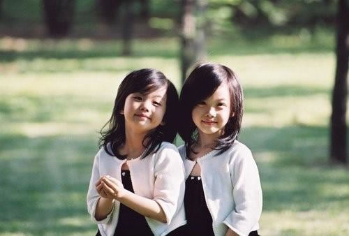

团队名称
这里有一个问题，就是中间class="center'的div宽度自适应效果无法显示，我已经设置了margin{0 140px 0 220px},不知道为什么，自适应的效果还是无法显示，现在暂时还没有找到答案。――――2016年8月5日记。
把父元素即class="container"的div宽度设置成自适应（百分比或者不设置宽度），子元素的自适应效果会出来。――――2016年8月6日记。
把父元素即class="container"的div宽度设置成自适应（百分比或者不设置宽度），子元素的自适应效果会出来。――――2016年8月6日记。
